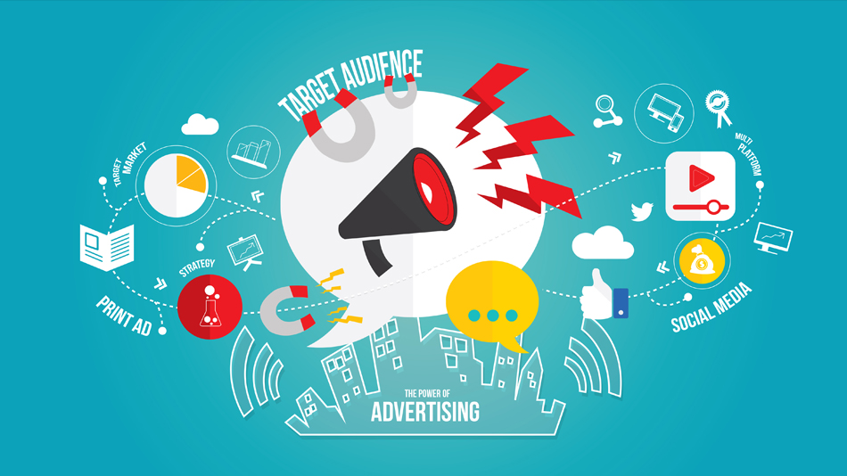

Digital Marketing For Politics in India
Prior to Indian election in 2014, the US political scene in 2007 witnessed a campaign by Obama that blended networking, e-mail programs and display ads in order to generate the dialogue to engage the constituents. Irrespective of whom you prefer at the political platform, digital marketing for political party with messaging has come to be recognized as a highly important medium than what it had been initially so much so that it is said to grow by 575% since 2012.
In 2014 General Election of India, BJP Team under leadership of Narendra Modi for the first time successfully used Social Media focussed Digital marketing for Politicians. In 2019 election we witnessed extreme surge in use of services of political digital marketing agency in India. All major National or State/Regional parties as well as individual candidates took services of digital marketing for political campaigns in India.
Apart from being a worthy political candidate, one has to organise better digital marketing for political campaigns in India for success and branding. We at Data Works, specialize in Digital Marketing for politicians in India, we focus on target audience, which is very important for political party(ies) or candidate(s) to gain the attention of the potential voters. Though a voter is absolutely entitled to keep his vote confidential, there are quite a few indicators that may help predict whom a voter is inclined to vote for. Social media political campaign has the power to swing the votes in favour of specific party or candidate, if performed professionally, creating an emotional, psychological trend towards the candidate or party. You can take for example, General Election-2019 of India – ‘Pulwama attack’ episode brought Nationalism, Patriotism on the front of voters, and subsided all other issues like de-monetisation, GST etc. Who played the major role? Obviously, ‘social media’. Nowadays, social media has shifted from Newspaper and Television to ‘Smart Phone’. Handy mobile phone contains all information, people are more comfortable checking all enquires/information here, and thus making mobile and internet a ‘Power House’ to bring revolution.
Data Works, a political digital marketing agency in India, has developed a political model that takes the entire holistic picture into consideration rather than just the last of the touch points for the enumerated voters. The point to be noted is that both the digital marketing as well as politics aim at convincing the people to undertake a desired activity. It may include purchasing a product or voting for you. And convincing is an activity that often demands lots of your time and also might leave you fatigued in the end. Our team related to digital marketing for politicians are well trained to overcome negativity and are professionally motivated to focus on positive aspects of the candidate or party till the end of the election.
Unlike the Traditional campaigning, Digital Marketing for political campaigns is an effective option that allows a political campaign to target the required audience in an economical manner. No wonder Digital Marketing for political campaigns in India has left traditional political campaign far behind; but essential component – mixer of both will naturally provide best result. Digital marketing political campaigns helps in creating an aura for the candidate before he meets his potential voters. Due to political social media activities, the voters are well aware about the candidate (beforehand) and so it facilitates the candidate’s easy acceptance by the voters.
By adopting a fully digital political marketing strategy it becomes easy to stay connected with the voters. It gives a personal touch to the scheme of things which makes voter relationship management easy and effective. This increases the voter foot print to a greater extent when it comes to elections.